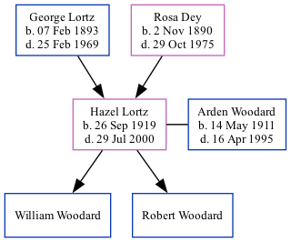

Hazel Mary Woodard (née Lortz) 1919 - 2000
[ Home ] | [ Surnames Index ] | [ Family History ]The younger of 2 children of George Lortz and Rosa Dey, , Hazel was the great-aunt of Stephanie Hardesty (née Teten), was born in Nebraska on Sep 26, 19191,2,3,4,5 and. She had 2 surviving children with Arden B Woodard: William and Robert.
During her life, she was living in Gresham, York, Nebraska in 19201; in Utica, Seward, Nebraska in 19302; in York, York, Nebraska in 19353; in York, York, Nebraska, USA on Apr 1, 19403; and in Phoenix, AZ in 19945.
She died on Jul 29, 2000 in Phoenix, , Arizona4.
Parents
- George Arthur was born on Feb 7, 1893
- Rosa Johanna was born on Nov 2, 1890
Children
- William
- Robert
Citations
- 1920 United States Federal Census Ancestry.com Operations Inc (Age: 0; Age: 3/12; Marital Status: Single; Relation to Head of House: Daughter)
- 1930 United States Federal Census Ancestry.com Operations Inc (Age: 10; Marital Status: Single; Relation to Head of House: Daughter)
- 1940 United States Federal Census Ancestry.com Operations, Inc. (Age: 21; Marital Status: Married; Relation to Head of House: Wife)
- Social Security Death Index Ancestry.com Operations Inc
- U.S. Public Records Index, Volume 1 Ancestry.com Operations, Inc.
Family Tree
Data (GEDCOM) maintained by Jay Weston Hannah, Omaha, Nebraska, USA.
Website generated by ged2site. Last updated on Jun 18, 2024.